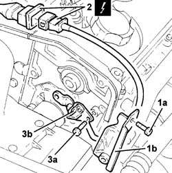
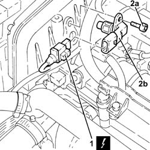
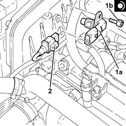

1060G22 cam angle sensor - r r
- Path
- Procedures > 10 ENGINE > 1060 DIESEL FUEL INJECTION > 1060G pressure pump electric control > 1060G22 cam angle sensor - r r
- Kind
- repair procedure (removal / refitting; the operation number is the code)
- Applies to
- engines: 1.9 JTD 8V, 1.9 JTD 16V; all production periods
- Interactive page
- https://sloeber94.github.io/elrnDB-a147/en/#/3025045
Applies to: engines: 1.9 JTD 8V; all production periods
 Removing
Removing
 Refitting
Refitting1016A10 sound-proofing cover - r + r
1008C10 power unit upper reaction link r r
1008C14 engine link bracket - r r
1060G80 ds electric injection control unit - r r
7055B54 under-engine guard - r r
7055B64 Engine compartment DUST shield in front wheel arch (one), left or right - R.R.
1092G10 single engine belt r r
1092A10 Crankshaft services PULLEY - R.R.
1032B10 toothed timing belt - r + r for timing adjustment or replacement
1032B40 toothed-driven pulley (one) - r + r with timing belt removed
1. Undo the bolts (1a) and remove the side timing belt protection (1b).
2. Disconnect the electrical connection for the cam angle sensor located near the engine oil dipstick tube.
3. Undo the bolts (3a) and remove the cam angle sensor (3b).
 | Name | Connector |
|---|---|---|
2 | Timing sensor. |

Applies to: engines: 1.9 JTD 8V; all production periods
Refitting
RemovingFit the sensor and tighten the retaining bolt.
Tighten the sensor bolts to torque.
 | Fastening | Component | Ø | Value (daNm) |
|---|---|---|---|---|
- | Bolt | CAM ANGLE SENSOR | M6 | 0.9 |
Connect the electrical connection
| Name | Connector |
|---|---|---|
- | Timing sensor. |
Position the timing belt side shield and tighten the fixing bolts.
1032B40 toothed-driven pulley (one) - r + r with timing belt removed
1032B10 toothed timing belt - r + r for timing adjustment or replacement
1092A10 Crankshaft services PULLEY - R.R.
1092G10 single engine belt r r
7055B64 Engine compartment DUST shield in front wheel arch (one), left or right - R.R.
7055B54 under-engine guard - r r
1060G80 ds electric injection control unit - r r
1008C14 engine link bracket - r r
Applies to: engines: 1.9 JTD 16V; all production periods
Removing
RefittingProceed with removal 1016A10 sound-proofing cover - r + r .
Ensure that the ignition key is in the OFF position, then disconnect the negative battery terminal (-).
| Name | Connector |
|---|---|---|
- | Battery |
1. Disconnect the electrical connection from the cam angle sensor.
| Name | Connector |
|---|---|---|
1 | Timing sensor. |
2. Undo the bolt (2a) and remove the cam angle sensor (2b).

Applies to: engines: 1.9 JTD 16V; all production periods
Refitting
Removing1. Plact the cam angle sensor (1a) back in its housing and secure it tightening the bolt (1b) to the recommended torque.
| Fastening | Component | Ø | Value (daNm) |
|---|---|---|---|---|
1b | Bolt | CAM ANGLE SENSOR | M6 | (Cylinder head side 08 10 |
2. Connect the electrical connection to the cam angle sensor.

Applies to: engines: 1.9 JTD 16V; all production periods
Connect the negative (-) battery terminal
Proceed with refitting 1016A10 sound-proofing cover - r + r .
Topics linked from this page (13)
- 1008C10 power unit upper reaction link r r
- 1008C14 engine link bracket - r r
- 1016A10 sound-proofing cover - r + r
- 1032B10 toothed timing belt - r + r for timing adjustment or replacement
- 1032B40 toothed-driven pulley (one) - r + r with timing belt removed
- 1060G80 ds electric injection control unit - r r
- 1092A10 Crankshaft services PULLEY - R.R.
- 1092G10 single engine belt r r
- 4450B04 right front wheel r r
- 7055B54 under-engine guard - r r
- 7055B64 Engine compartment DUST shield in front wheel arch (one), left or right - R.R.
- A1B Battery ( Connectors )
- K47 Timing sensor.